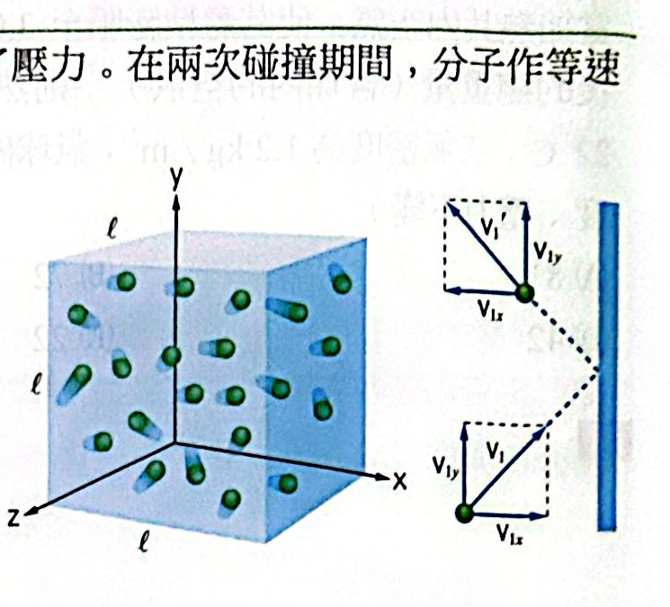
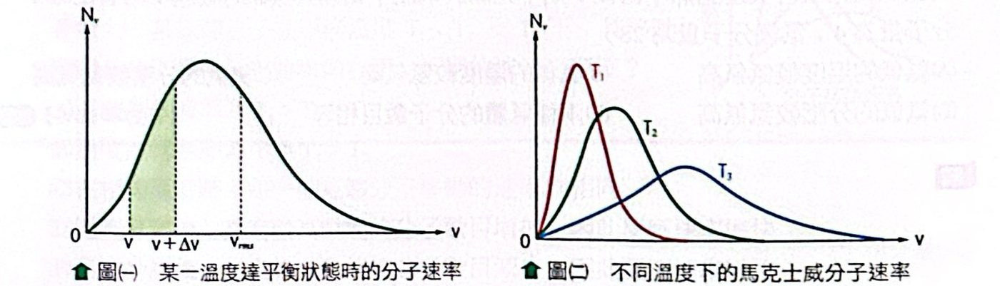
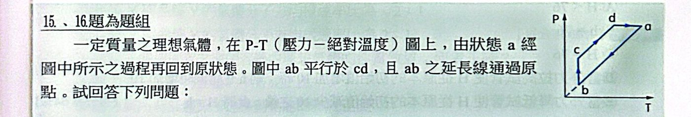
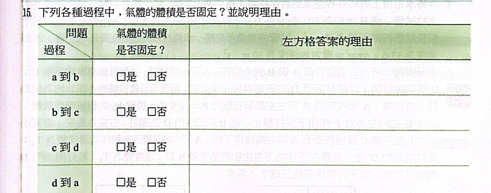
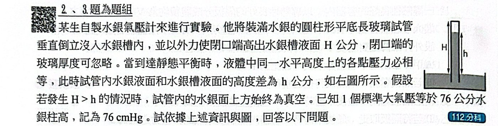
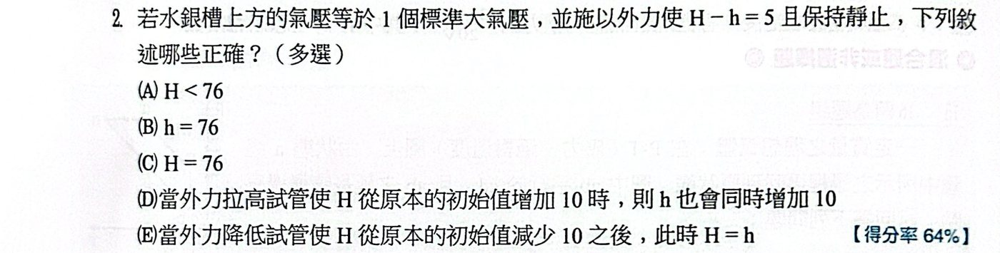
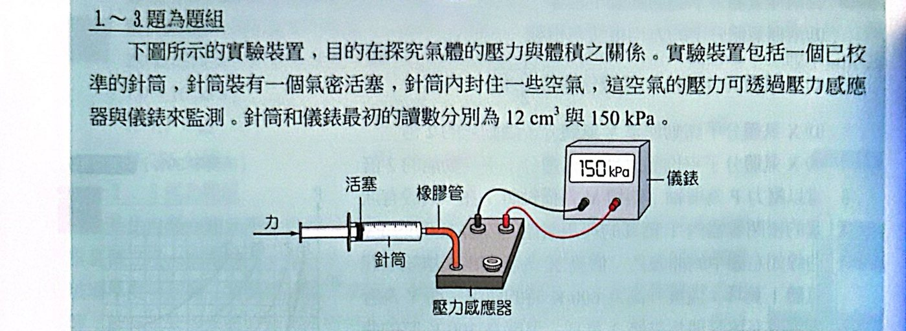
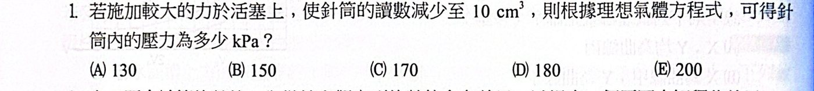

焦點 1 理想氣體方程式
氣體是由數量多到數不清的分子組成的，我們不可能追蹤每一顆分子。這個單元分兩步：先從巨觀量測出發，找出壓力 P、體積 V、溫度 T、分子數 n 之間的規律（理想氣體方程式）；再從微觀的分子碰撞出發，解釋壓力和溫度到底是什麼（氣體動力論）。兩條路最後會在同一條式子會合。
一、理想氣體
理想氣體的假設：分子本身的大小和分子間的距離相比極小，可以當成質點；除了彈性碰撞之外，分子之間沒有交互作用。密閉容器內低密度的真實氣體，行為就很接近理想氣體。
二、三大氣體定律
一次只讓一個量變化、其他固定，實驗上找到三條規律：
波以耳：P1V1 ＝ P2V2（n、T 固定）定溫為什麼？
內容
溫度和氣體量不變時，壓力和體積成反比。把針筒壓成一半體積，壓力變兩倍。
分子觀點
體積變一半，同樣多的分子擠在一半的空間，單位時間撞到每單位面積器壁的次數變兩倍 ⇒ 壓力兩倍。溫度不變，每次撞擊的力道不變。
查理：V1/T1 ＝ V2/T2（n、P 固定）；給呂薩克：P1/T1 ＝ P2/T2（n、V 固定）定壓、定容為什麼？
內容
- 定壓：體積與絕對溫度成正比（熱氣球加熱膨脹）
- 定容：壓力與絕對溫度成正比（夏天輪胎壓力變高）
一定要用絕對溫度
T 要用克氏溫度 K ＝ ℃ ＋ 273。攝氏溫度和體積不成正比：從 10 ℃ 到 20 ℃ 不是「溫度加倍」。把 V–t 直線往回延長，會交在 −273 ℃，這就是絕對零度的由來。
把三條合在一起，再加上「同溫同壓下，體積和分子數成正比」（亞佛加厥定律），就得到一條總式子：
PV ＝ nRT ＝ NkT理想氣體方程式為什麼？
推導
三大定律合併：P1V1/T1 ＝ P2V2/T2，也就是 PV/T 是定值。
亞佛加厥定律：這個定值和氣體量 n 成正比 ⇒ PV/(nT) ＝ 常數 R。
兩種常數
- R ＝ 8.31 J/(mol·K)（物理用，SI 單位）＝ 0.082 atm·L/(mol·K)（化學用）
- 用分子個數 N ＝ nNA：PV ＝ N(R/NA)T ＝ NkT，波茲曼常數 k ＝ R/NA ＝ 1.38×10−23 J/K
解題策略
- 先判斷 P、V、n、T 哪些固定，用對應的比例式最快。
- 找不到固定的量，就對變化前、後各寫一次 PV ＝ nRT，聯立。
- 單位要一致：等號兩邊都是同一個物理量（如 P1V1 ＝ P2V2）時，單位只要兩邊相同就好；但溫度一律換成 K。
常用變形
n ＝ m/M ⇒ PV ＝ (m/M)RT ⇒ PM ＝ ρRT：同壓下，氣體密度與絕對溫度成反比──熱空氣比較輕，所以熱氣球會浮起來。
焦點 1 範例與類題
看答案與詳解收起
答(1) (B)(D) (2) (E)
解(1) 從 T1 曲線讀一點，例如 V ＝ 0.2 m³ 時 P ＝ 0.3 atm：PV ＝ 0.06 atm·m³ ＝ 60 atm·L
n ＝ 60/(0.082 × 300) ≈ 2.4 mol（B）
T2 曲線同 V 處 P ＝ 0.4 atm：PV 為 T1 的 4/3 倍 ⇒ T2 ＝ 400 K ＝ 127 ℃（D）
(E) ✗ 0.4 atm、0.2 m³ 只在 T2 成立，溫度不同體積就不同，不是「必為」。
(2) 同溫下 n ∝ PV：總 PV ＝ 3 × 20 ＋ 6 × 40 ＝ 300 atm·L（300 K）
加熱到 420 K、總體積 60 L：P × 60 ＝ 300 × 420/300 ⇒ P ＝ 7.0 atm
看答案與詳解收起
答1/2；2
解質量固定：V ∝ 1/ρ；P ∝ ρT
- a (2T0, 2ρ0)、b (2T0, ρ0) ⇒ Va/Vb ＝ ρb/ρa ＝ 1/2
- b (2T0, ρ0)、c (T0, ρ0) ⇒ Pb/Pc ＝ 2T0/T0 ＝ 2
看答案與詳解收起
答(B)
解兩者都在 300 K，n ∝ PV：1 × 8 ＋ 2 × 3 ＝ 14
混合後 10 L、2.8 atm：2.8 × 10 ＝ 14 × T/300 ⇒ T ＝ 600 K ＝ 327 ℃
看答案與詳解收起
答(A)
解浮力 ＝ 外界空氣密度 × V × g ⇒ 相當於 1.2 × 3000 ＝ 3600 kg
3600 ＝ 600 ＋ 球內空氣 ⇒ 球內空氣 3000 kg ⇒ ρ內 ＝ 1.0 kg/m³
同壓下 ρT ＝ 定值：1.2 × 295 ＝ 1.0 × T ⇒ T ＝ 354 K ≈ 81 ℃
看答案與詳解收起
答12；87
解n ＝ PV/RT ＝ 105 × 10/(8.31 × 300) ≈ 401 mol ⇒ 質量 ≈ 401 × 30 g ≈ 12 kg
浮力相當 12 kg，需要 內部空氣 ＋ 2 ≤ 12 ⇒ 內部空氣 ≤ 10 kg
同壓 ρT 定值：12 × 300 ＝ 10 × T ⇒ T ＝ 360 K ＝ 87 ℃
看答案與詳解收起
答0.4
解n ∝ P/T（V 固定）：剩下比例 ＝ (6/300)/(8/320) ＝ 0.8 ⇒ 剩 1.6 g，漏掉 0.4 g
焦點 2 氣體動力論
三、氣體壓力的微觀來源
壓力不是氣體「推」的，而是無數分子不停撞擊器壁、每次撞擊都把動量交給牆壁，平均下來形成的穩定的力。從這個想法出發，可以把壓力和分子速率連起來。

分子在邊長 ℓ 的立方容器中來回撞擊器壁
P ＝ Nmv²平均/(3V) ＝ ⅓ρv²平均壓力的微觀公式為什麼？
推導
- 一顆分子以 vx 撞右壁彈回，動量變化 2mvx。
- 它要來回 2ℓ 才會再撞同一面牆，間隔 Δt ＝ 2ℓ/vx。
- 平均作用力 F1 ＝ 2mvx/(2ℓ/vx) ＝ mvx²/ℓ
- N 顆加總，除以面積 ℓ²：P ＝ Nm·(vx²的平均)/ℓ³ ＝ Nm·(vx²平均)/V
- 分子方向完全亂，三個方向地位相同：vx² 平均 ＝ ⅓ v² 平均 ⇒ P ＝ Nmv²/(3V)
邏輯
壓力大的兩個原因：分子多（N/V 大、撞得次數多）、分子快（每次撞得重，又撞得頻繁──所以是 v²）。
四、溫度的微觀意義
把上面的微觀壓力和巨觀的 PV ＝ NkT 放在一起比較，就會發現「溫度」到底是什麼。
K̄ ＝ ½mv²平均 ＝ (3/2)kT溫度就是分子平均動能為什麼？
推導
微觀：PV ＝ ⅓Nmv² ＝ (2/3)N·(½mv²) ＝ (2/3)N K̄
巨觀：PV ＝ NkT
⇒ K̄ ＝ (3/2)kT
邏輯重點
- 絕對溫度就是分子平均移動動能的量度，只看溫度，和氣體種類、壓力、體積都無關。
- 不同氣體混在一起達熱平衡 ⇒ 溫度相同 ⇒ 平均動能相同；但質量不同，所以速率不同（輕的跑得快）。
內能
單原子理想氣體的內能 ＝ 所有分子動能總和：E ＝ N(3/2)kT ＝ (3/2)nRT ＝ (3/2)PV
氣體混合時（不起化學變化、不對外作功、絕熱），總內能守恆：N1T1 ＋ N2T2 ＝ (N1 ＋ N2)T'。
vrms ＝ √(3kT/m) ＝ √(3RT/M) ＝ √(3P/ρ)方均根速率為什麼？
推導
½mv²平均 ＝ (3/2)kT ⇒ v²平均 ＝ 3kT/m ⇒ 開根號就是方均根速率。
乘上 NA：k/m ＝ R/M（M 是莫耳質量，SI 單位 kg/mol）。
由 P ＝ ⅓ρv² 也可得 √(3P/ρ)。
比較技巧
vrms ∝ √(T/M)：
- 同溫：氫（M ＝ 2）比氧（M ＝ 32）快 4 倍
- 同一氣體溫度變 4 倍，速率變 2 倍
注意
M 一定要用 kg/mol（氧氣 0.032），用 g/mol 會差 √1000 倍。
方均根速率不是每顆分子的速率，只是「平方平均再開根號」的代表值。
五、馬克士威速率分布
分子彼此碰撞，個別的速率一直在變，但整體的分布是穩定的統計結果：極快、極慢的都很少，大部分集中在峰值附近。

(一) 某溫度下的速率分布；(二) 溫度愈高，曲線愈往高速偏、愈扁平
- 曲線下的面積 ＝ 分子總數，所以升溫時曲線變扁、往右移，但面積不變。
- 溫度升高：高能量分子的比例增加 → 化學反應變快（和反應速率的內容相通）。
焦點 2 範例與類題
看答案與詳解收起
答(D)
解同溫下氦氣（M ＝ 4）分子速率遠大於氮氣（M ＝ 28），速率 ＞ 400 m/s 的比例高得多 ⇒ 氦氣逸出的分子多。
- 再次熱平衡後，兩者在同一容器中 ⇒ 溫度相同（A、B ✗）
- 氦氣剩下的分子數較少 ⇒ 氮氣分壓較高（D ✓、C ✗、E ✗）
看答案與詳解收起
答7/8
解絕熱、不作功 ⇒ 內能守恆：n·T ＋ 2n·3T ＝ 3n·T' ⇒ T' ＝ 7T/3
混合後 P' ＝ 3nR(7T/3)/(4V) ＝ 7nRT/(4V)
右室原本 P ＝ 2nR(3T)/(3V) ＝ 2nRT/V ⇒ 比值 ＝ 7/8
看答案與詳解收起
答1000
解vrms ∝ √(T/M)：2000 × √[(1200/300) × (2/32)] ＝ 2000 × √(1/4) ＝ 1000 m/s
看答案與詳解收起
答3T/4
解隔板平衡 ⇒ 兩室壓力相同：NLTL/VL ＝ NRTR/VR
3TL/2 ＝ 1 × T/1 ⇒ TL ＝ 2T/3
內能守恆：3 × (2T/3) ＋ 1 × T ＝ 4T' ⇒ T' ＝ 3T/4
焦點練習題
看答案與詳解收起
答(D)
解溫度愈高，曲線愈扁、峰值愈往右 ⇒ T3 ＞ T2 ＞ T1（A、B ✗）
同溫下速率有分布（C ✗）；升溫後高動能分子變多，反應加快（D ✓）
看答案與詳解收起
答(C)
解P2 ＝ 2 × (10/5) × (293/586) ＝ 2 atm
看答案與詳解收起
答(A)
解同溫：2P × 3V ＋ P × V ＝ P' × 3V ⇒ P' ＝ 7P/3
看答案與詳解收起
答(E)
解n1 ∝ PV/T1、n2 ∝ 2PV/T2；內能守恆 n1T1 ＋ n2T2 ＝ (n1 ＋ n2)T
3PV ＝ (PV/T1 ＋ 2PV/T2)T ⇒ T ＝ 3T1T2/(T2 ＋ 2T1) ⇒ (E)
看答案與詳解收起
答(B)
解TL ∝ PV/n；TR ∝ 2.5P × 2V/(2n) ＝ 2.5PV/n ⇒ TR ＝ 2.5TL
nTL ＋ 2n(2.5TL) ＝ 3nT' ⇒ T' ＝ 2TL
看答案與詳解收起
答(C)
解定壓 V ∝ nT：0.45 × (4/3) × (250/300) ＝ 0.50 m³
看答案與詳解收起
答(C)
解T ＝ Mv²/(3R) ＝ 0.023 × 0.04/(3 × 8.31) ≈ 3.7×10−5 K ⇒ 10−5～10−4 K
看答案與詳解收起
答(B)
解原本 n ＝ 10 × 10/(0.082 × 300) ≈ 4.07 mol
最後 n ＝ 12 × 10/(0.082 × 400) ≈ 3.66 mol ⇒ 排出 ≈ 0.41 mol
看答案與詳解收起
答(C)
解
- 壓力：P ＝ nRT/V：氦 3 × 300/(2V) ＝ 450/V；氬 1 × 450/V ⇒ 相等（A ✗）
- 平均動能 ∝ T：氦 300 K ＜ 氬 450 K（C ✓、B ✗）
- vrms ∝ √(T/M)：氦 √(300/4) ≈ 8.7，氬 √(450/40) ≈ 3.4 ⇒ 氦較快（D、E ✗）
看答案與詳解收起
答(C)
解氣體把活塞往左推，彈簧被拉長 x；氣柱長 L/2 ＋ x，P ＝ kx/A
PV ＝ nRT ⇒ kx(L/2 ＋ x) ＝ nRT
T 與 x 是二次關係：T 增加時 x 也增加但愈來愈慢，且 T → 0 時 x → 0 ⇒ 通過原點、向下彎的曲線 丙。
看答案與詳解收起
答(B)
解同溫、最後壓力相同 ⇒ n ∝ V：總 5 mol 分成 5/3（左）、10/3（右）
左室流出 3 − 5/3 ＝ 4/3 mol
看答案與詳解收起
答(C)
解同溫同體積，n ∝ P：剩下 10 × 1/5 ＝ 2 kg ⇒ 洩出 8 kg
看答案與詳解收起
答(B)
解氦氣筒最後壓力不會低於氣球壓力 1.2×105，筒內要留下 1.2×105 × 0.1。
可用 PV ＝ 107 × 0.1 − 1.2×105 × 0.1 ＝ 9.88×105
每個氣球 1.2×105 × 10−2 ＝ 1200 ⇒ 823 個 ≈ 820
看答案與詳解收起
答(B)(D)(E)
解nHe ＝ M/4、nNe ＝ M/20 ⇒ 5 : 1（A ✗）
- (B) ○ 甲室壓力較大，把隔板推向乙
- (C) ✗ 平衡時壓力相同、溫度相同 ⇒ 體積比 5 : 1
- (D) ○ 分壓比 ＝ 莫耳比 5 : 1
- (E) ○ P ＝ (M/4 ＋ M/20)RT/(2V) ＝ 3MRT/(20V)


看答案與詳解收起
答a→b：是；b→c：否；c→d：否；d→a：否
解V ∝ T/P，看 P–T 圖上各點與原點連線的斜率 P/T：
- a→b 是：ab 的延長線通過原點，P/T 固定 ⇒ V 固定
- b→c 否：T 不變、P 增加 ⇒ V 減小
- c→d 否：cd 平行 ab 但不過原點，P/T 逐漸變小 ⇒ V 增加
- d→a 否：P 不變、T 增加 ⇒ V 增加
看答案與詳解收起
答(A)(C)
解
- (A) ○ 體積變化：b→c 減小，之後一路增加到 a，再定容回 b ⇒ c 最小
- (B) ✗
- (C) ○ b、c 溫度相同 ⇒ vrms 相同
- (D) ✗ a、b 溫度不同
- (E) ✗ 氣體總動量永遠為 0
歷屆試題觀摩
看答案與詳解收起
答(D)
解同溫，換算到 1 atm：15100 × 3.4/100 ≈ 513 L，瓶內必須留下 3.4 L（壓力降到 1 atm 就流不出來）
可用 ≈ 510 L ÷ 2.0 L/min ＝ 255 分鐘


看答案與詳解收起
答(B)(E)
解H − h ＝ 5 ＞ 0 ⇒ 管頂是真空，水銀柱由大氣壓撐住：h ＝ 76、H ＝ 81
- (A)(C) ✗
- (D) ✗ 管頂有真空時，大氣只能撐 76 cm，H 再增加 h 也不變
- (E) ○ H 減 10 ＝ 71 ＜ 76，管內全被水銀填滿 ⇒ H ＝ h
看答案與詳解收起
答增加約 3.0 J
解H ＝ 70 ＜ 76：管內全是水銀，柱高 70 cm；H ＝ 80：柱高變成 76 cm（上方出現真空）。
以水銀槽液面為零點，高 h 的水銀柱位能 ＝ ρAg·h²/2（質心在 h/2）：
ΔU ＝ 13.6×103 × 5×10−4 × 10 × (0.76² − 0.70²)/2 ≈ 68 × 0.0876/2 ≈ ＋3.0 J
看答案與詳解收起
答(B)(C)
解
- A 筒：氣體推動活塞對外作功，絕熱 ⇒ 內能減少 ⇒ TA ＜ T0（C ✓）
- B 筒：向真空自由膨脹，不作功也不吸熱 ⇒ 內能不變 ⇒ TB ＝ T0（B ✓）
- 所以 TA ＜ TB（D、E ✗）
看答案與詳解收起
答(D)
解
- (A) ✗ 兩種氣體總動量都是 0
- (B) ✗ vrms ∝ 1/√M，不相等
- (C) ✗ 分壓 ∝ 莫耳數，X 是 Y 的 2 倍
- (D) ○ 同溫平均動能相同，總動能 ∝ 莫耳數 ⇒ 2 倍
- (E) ✗ 平均動能相同
看答案與詳解收起
答(A)(D)
解PV ∝ nT：
- X（1 mol、600 K）與 Y（2 mol、300 K）的 nT 都是乙（1 mol、300 K）的 2 倍 ⇒ 是同一條曲線 ⇒ 從圖中找 PV 為乙兩倍者：丙（A ✓）
- vrms ∝ √T（同種氣體）：√600 : √300 ＝ √2 : 1（D ✓）
看答案與詳解收起
答(B)
解P ＝ (2/3)(E總動能)/V ⇒ 體積固定時，壓力與所有分子移動動能的總和成正比（B ✓）
- (A) ✗ 分子平均動量為 0
- (C) ✗ 只有平均動能增加
- (D) ✗ 降溫壓力下降
- (E) ✗ 理論推導假設彈性碰撞
看答案與詳解收起
答(C)
解胎內壓力 4 atm ≈ 4.04×105 Pa，V ＝ 10−2 m³
N ＝ PV/(kT) ＝ 4.04×103/(1.38×10−23 × 300) ≈ 9.8×1023 ≈ 1024
素養試題


看答案與詳解收起
答(D)
解定溫：150 × 12 ＝ P × 10 ⇒ P ＝ 180 kPa
看答案與詳解收起
答見詳解（任一合理原因）
解
- 壓縮很快時氣體溫度上升，不是定溫過程，讀數會偏高。
- 針筒外還有橡膠管和感應器內的空氣體積，實際氣體體積不是只有針筒讀數。
- 活塞漏氣，氣體量改變。
看答案與詳解收起
答變大
解移除外力後，管內氣體壓力（180 kPa）大於外界，分子撞擊活塞內側的次數與力道大於外側空氣分子，淨力把活塞往外推，體積變大；體積增加後分子撞擊器壁的頻率降低，壓力下降，直到內外壓力相等為止。
看答案與詳解收起
答2.88×105 Pa
解定溫：PA × 2.0 ＝ 1.6 × 3.6 ⇒ PA ＝ 2.88×105 Pa
看答案與詳解收起
答同意
解溫度維持 400 K 不變，分子平均動能 (3/2)kT 不變，分子數也不變，所以總動能不變。外界壓縮氣體作的功，會以熱的形式從氣體傳到外界（等溫過程放熱），內能沒有增加。